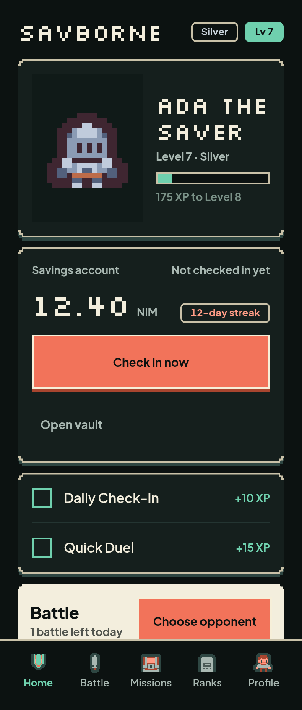
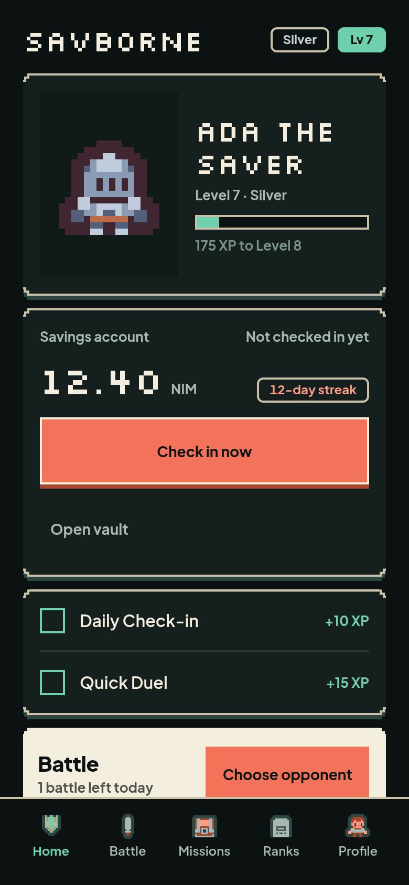
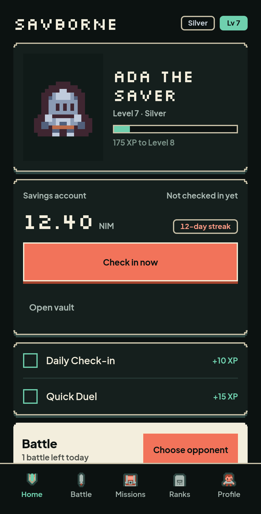
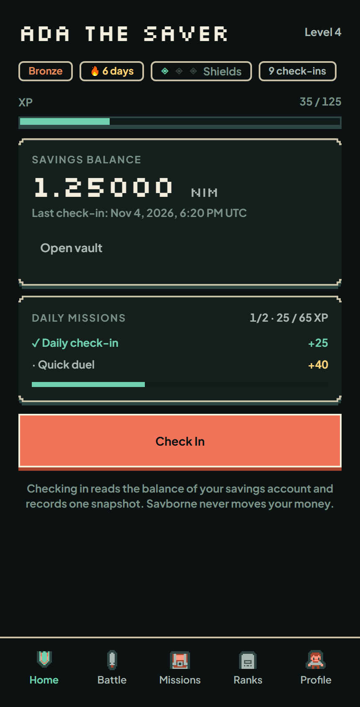
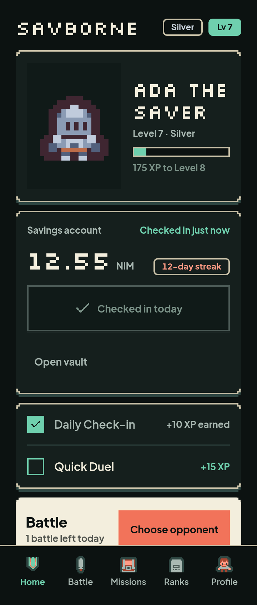
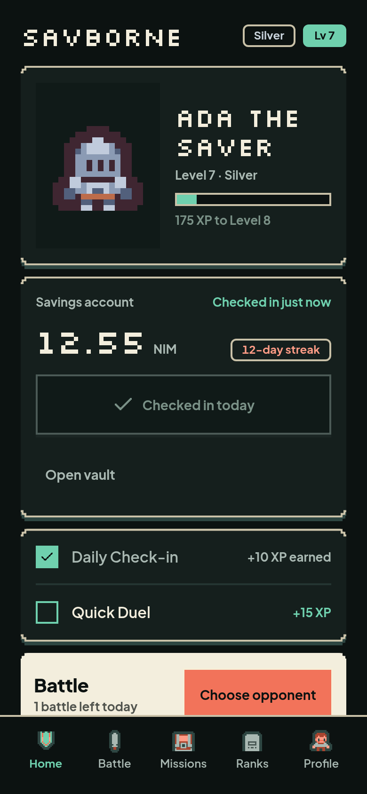
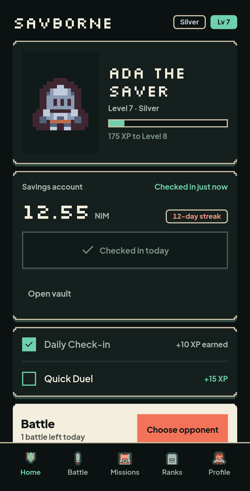
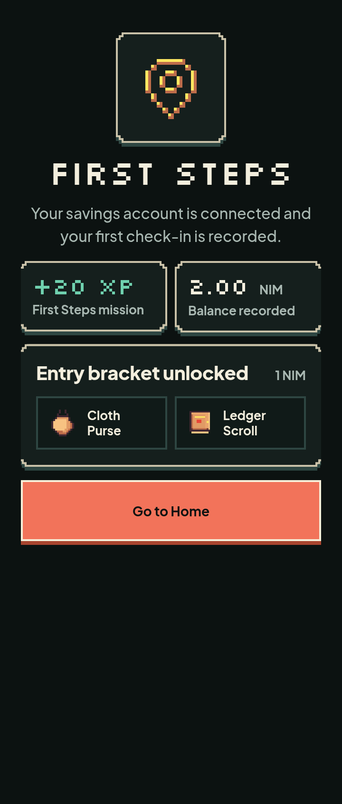
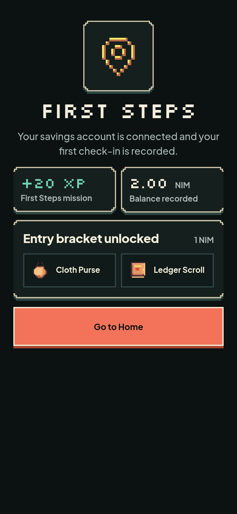
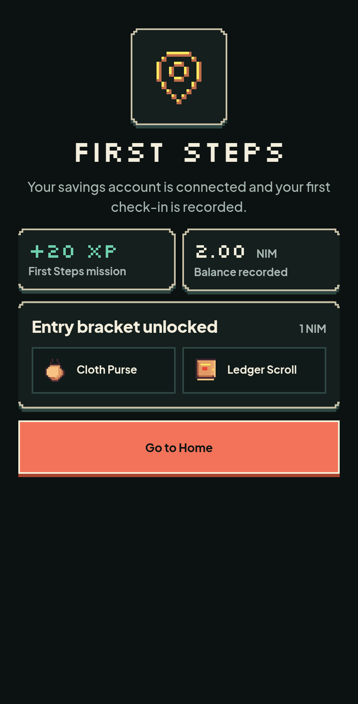

Home
/ — wordmark header, character card, savings card, missions, Battle



Before (Foundation 2 Home)



Home default, checked-in and First check-in at 360, 390 and 430. The Before
strip is the Foundation 2 Home. Corrections go in NOTES.md.
/ — wordmark header, character card, savings card, missions, Battle




/ — disabled check-in, checked-in status, Daily Check-in ticked



The delta chip is a post-check-in transient; this static render shows the streak chip.
/first-checkin — First Steps, +20 XP, balance, bracket items



Renders are 2× device-scale PNGs from the headless CDP harness. The real Supabase backend is not configured in this sandbox, so these use fixture data.